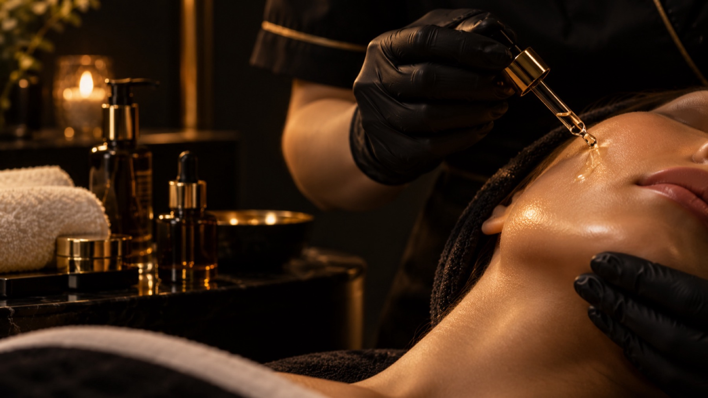
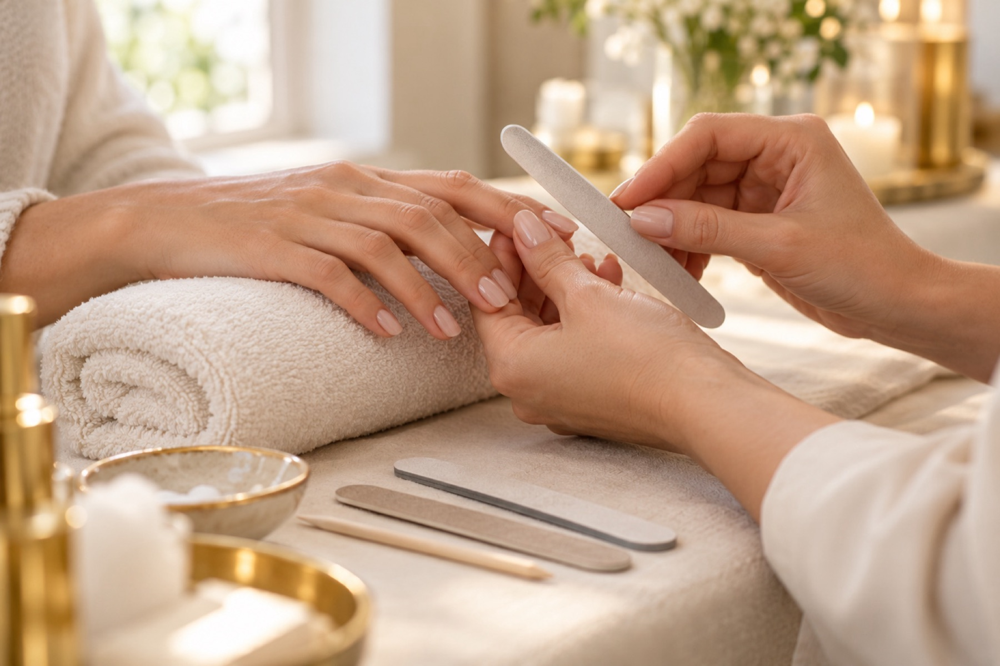

Villingen-Schwenningen
Jede Behandlung ein Ritual
Gesicht, Hände, Füße, Körper. Individuell betreut von Yuliya Fedorko in Villingen-Schwenningen.

Ablauf
Ihr Termin in drei Schritten
-
01
Nachricht per WhatsApp
Schreiben Sie uns, welche Behandlung Sie interessiert. Gemeinsam finden wir einen passenden Termin.
-
02
Beratung vor Ort
Wir sprechen kurz über Ihre Wünsche und Ihre Haut, bevor die Behandlung beginnt.
-
03
Behandlung und Pflegetipp
Sie lehnen sich zurück. Zum Schluss erhalten Sie einen Tipp für die Pflege zu Hause.
Leistungen
Sechs Rituale für Haut und Wohlbefinden
-
Aqua Facial / HydraFacial
Eine gründliche, angenehme Gesichtsreinigung mit Feuchtigkeit. Die Haut wird gereinigt, gepflegt und fühlt sich danach frisch an.
-
Microneedling
Feine Nadeln, kombiniert mit einer passenden Wirkstoffpflege. Wir besprechen vorab, was zu Ihrer Haut passt.
-
Fußpflege / Pediküre
Gepflegte Füße von der Nagelpflege bis zur sanften Hornhautbehandlung, in ruhiger Atmosphäre.
-
Nageldesign / Maniküre
Formen, pflegen, gestalten: von natürlich und dezent bis zu Ihrem Wunschdesign.
-
Massagen / Lymphdrainage
Wohltuende Massagen und sanfte Lymphdrainage, damit Sie abschalten und durchatmen können.
-
Individuelle Gesichtsbehandlungen
Reinigung, Pflege und Wirkstoffe, abgestimmt auf Ihren Hauttyp und Ihre Wünsche.
Galerie
Einblicke in die Behandlungen

Über Yuliya Fedorko
Ruhe und Zeit für Sie
Im Studio am Krebsgraben nimmt sich Yuliya Fedorko Zeit für Sie. Bevor eine Behandlung beginnt, sprechen wir darüber, was Ihre Haut oder Ihre Hände und Füße gerade brauchen.
Die Atmosphäre ist ruhig und persönlich. Sie entscheiden, wie viel Pflege es sein darf, und bekommen am Ende einen Tipp mit, wie Sie zu Hause weitermachen können.
Häufige Fragen
Wie bereite ich mich auf den Termin vor?
Kommen Sie, wie Sie sind. Bei Gesichtsbehandlungen ist es hilfreich, wenn Sie wenig oder kein Make-up tragen. Teilen Sie uns bei der Terminanfrage kurz mit, ob Sie Allergien haben oder empfindliche Haut.
Wie lange dauert eine Behandlung?
Das hängt von der Behandlung ab. Bei der Terminvereinbarung nennen wir Ihnen die ungefähre Dauer, damit Sie in Ruhe planen können.
Was sollte ich nach der Behandlung beachten?
Sie bekommen am Ende des Termins persönliche Pflegetipps, zum Beispiel zu Sonnenschutz und Pflegeprodukten. Bei Fragen melden Sie sich gern per WhatsApp.
Was gilt, wenn ich einen Termin absagen muss?
Bitte geben Sie uns so früh wie möglich Bescheid, am einfachsten per WhatsApp oder telefonisch. Dann finden wir gemeinsam einen neuen Termin für Sie.
- Adresse
- Yuliya Fedorko Kosmetik Studio
Am Krebsgraben 3
78048 Villingen-Schwenningen Route in Google Maps öffnen - Telefon und WhatsApp
- 0162 9843318
- @yuliya.fedorko.kosmetik